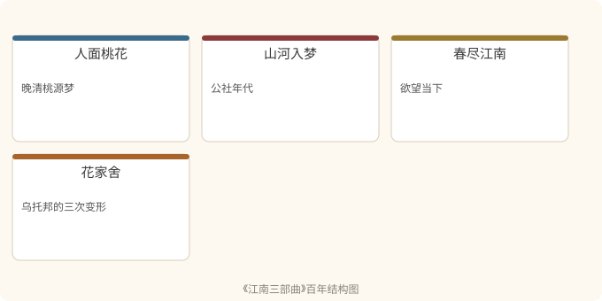

江南三部曲
一、基本信息
| 作者 | 格非 |
|---|---|
| 成书/出版 | 第九届茅盾文学奖获奖作品（中国作家网官方名单 C012：上海文艺出版社；清华官网 C021：'凭借《江南三部曲》获得该项殊荣，并且以57票高居第一'） 清华大学：第九届茅盾文学奖揭晓 我院教授格非获奖（高校官网） |
| 国别/地区 | 中国 |
| 时代 | 现当代 · 当代 |
| 体裁 | 长篇小说（三部曲） |
| 语言 | 汉语（白话） |

《江南三部曲》百年结构图（主题·结构图）
二、创作背景
清华官网（C021）：江南三部曲为《人面桃花》《山河入梦》《春尽江南》。
三部曲跨百年：从晚清乌托邦实验到当代欲望都市（通说待核）。
三、内容脉络
《人面桃花》：晚清秀才王观澄？——陆秀才（王季树?）的桃源梦（人物名待核）。
《山河入梦》：大跃进年代的花家舍（通说待核）。
《春尽江南》：当代诗人与律师的婚姻（通说待核）。
四、主要人物表
| 人物 | 身份 | 说明 |
|---|---|---|
| 陆秀才（秀米） | 革命者 | 第一部（人物名待核） |
| 谭功达 | 县长 | 第二部（通说待核） |
| 谭端午 | 诗人 | 第三部（通说待核） |
五、主题与艺术特点
- 乌托邦的百年循环：桃源—人民公社—商品社会（通说）。
- 江南的地理与诗意（C021 书名语境）。
- 先锋叙事的学院化综合（通说）。
六、影响与评论
- 清华官网：第九届茅盾文学奖'57票高居第一'；江南三部曲三部书名（C021）。
清华大学：第九届茅盾文学奖揭晓 我院教授格非获奖（高校官网） - 中国作家网官方名单：第九届茅盾文学奖获奖作品、上海文艺出版社（C012）。
历届茅盾文学奖获奖作品一览（中国作家网）（官方文学机构）
七、阅读建议
难点
- 三部曲的人物世系。
- 乌托邦观念史背景。
- 《江南三部曲》（上海文艺出版社，C012 官方名单口径）。
按三部顺序通读；先《人面桃花》定调。
八、待核实
- 第一部主人公名（秀米/陆侃）核对。
- 三部各自出版年份核对。
- '乌托邦三部曲'旧名待核。
本页主要来源
格非的其他收录作品：江南三部曲